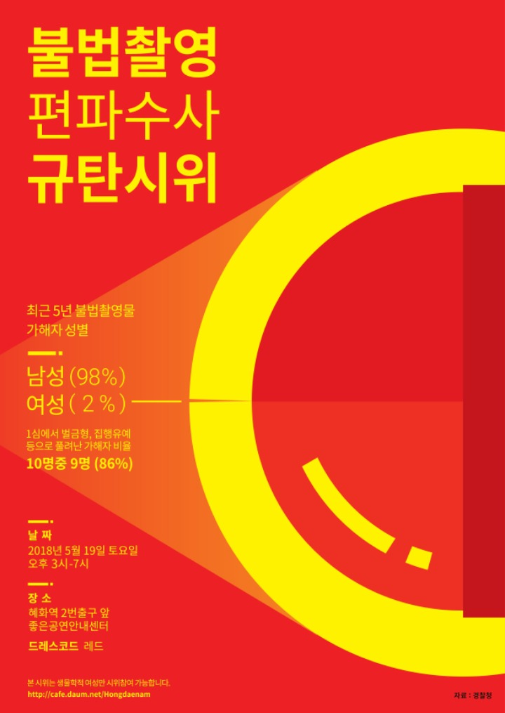
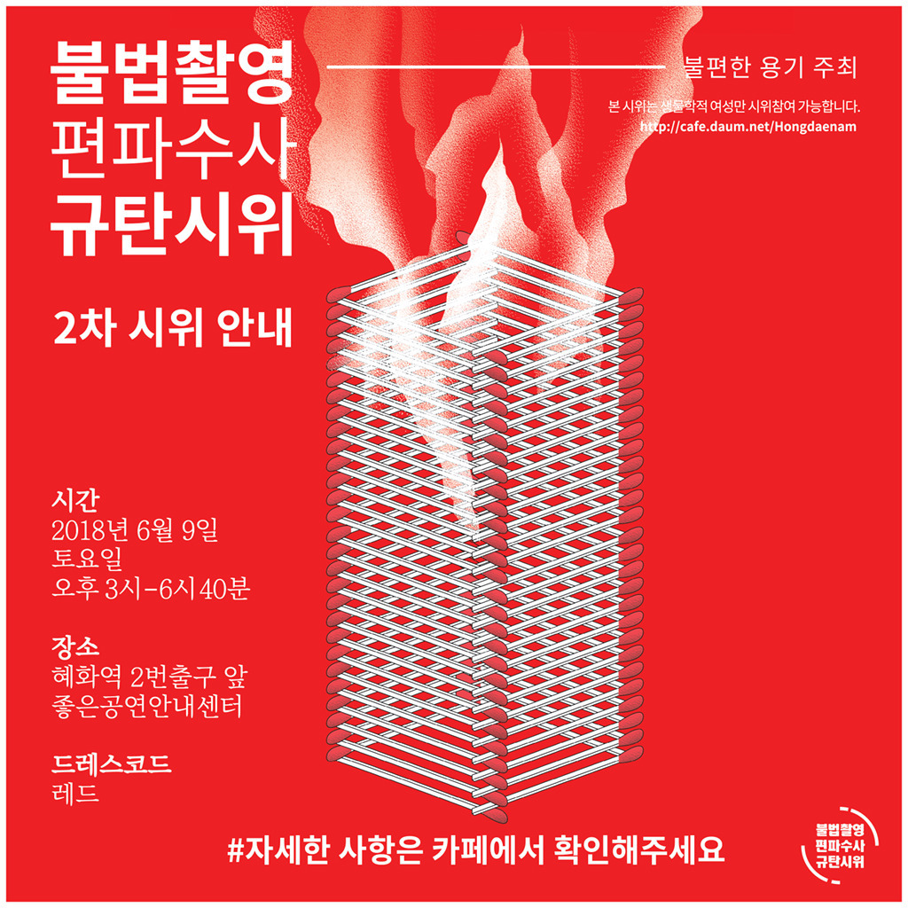
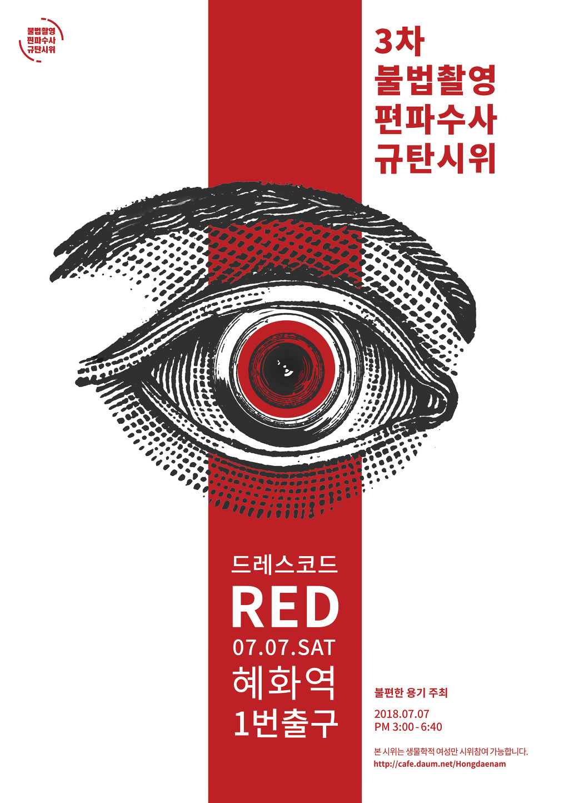
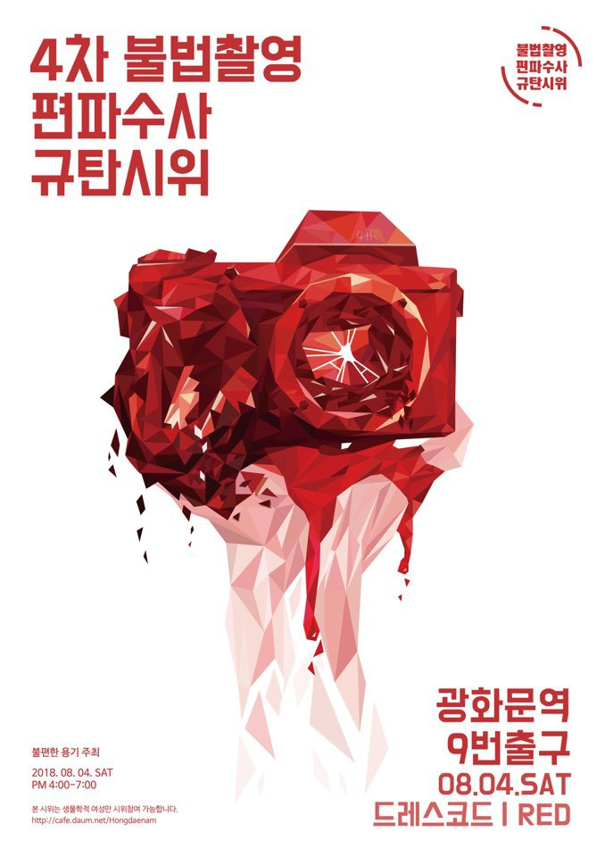
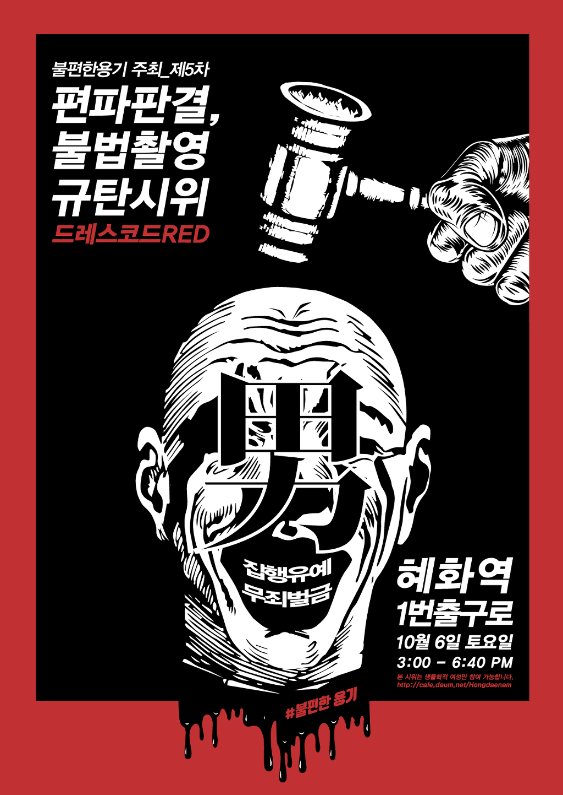
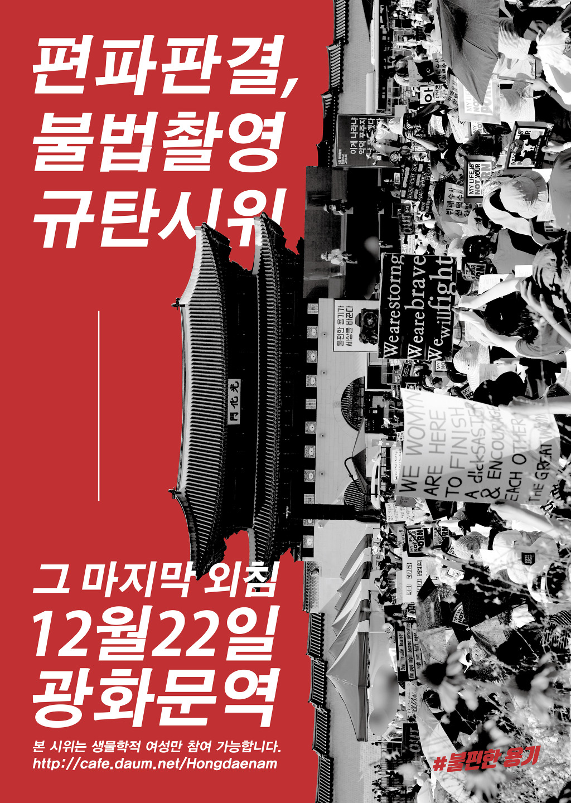

뒤로가기
불법촬영 편파수사 규탄시위
1 개요
불법촬영 편파수사 규탄시위는 “동일범죄 동일처벌”이라는 슬로건을 표방하며 불법 촬영과 편파 수사를 규탄하였던불편한 용기 팀 주최의 시위다.
- 1차 : 2018년 5월 19일, 혜화역, 주최 측 추산 1만 5000여명[1]
- 2차 : 2018년 6월 9일, 혜화역, 주최 측 추산 4만 5000여명
- 3차 : 2018년 7월 7일, 혜화역, 주최 측 추산 6만여명
- 4차 : 2018년 8월 4일, 광화문, 주최 측 추산 7만여명[2]
- 5차 : 2018년 10월 6일, 혜화역,
- 6차 : 2018년 12월 22일, 광화문, 주최 측 추산 11만여명
2 연혁
1차

2차

3차

4차

5차

6차

3 각주